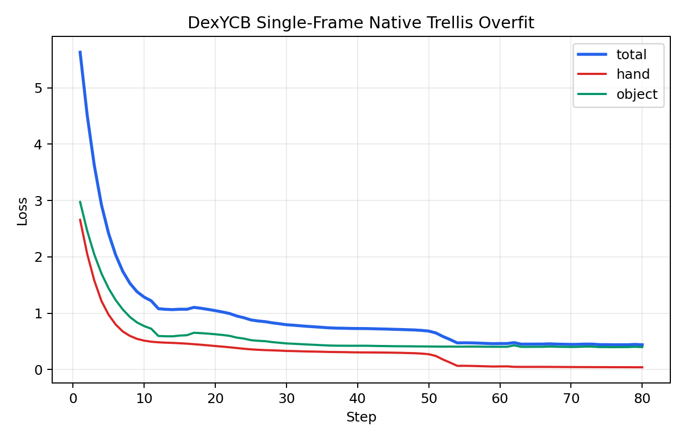
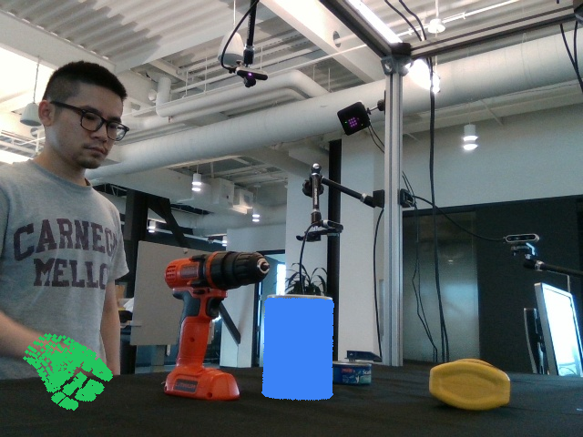
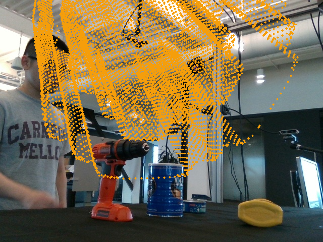
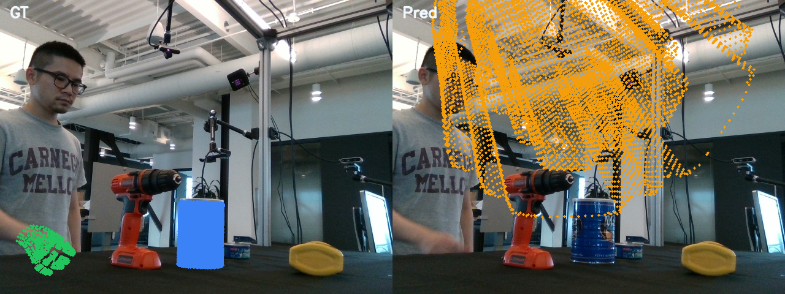

Loss Curve
The native sparse decoder path drops the total geometry-driven loss from 5.63 to 0.44 over 80 CUDA steps on one visible-hand frame.
This node replaces the bootstrap dense vertex head with the native TRELLIS-style sparse mesh decoder path.
The run uses sequence 20200709-subject-01/20200709_141754/836212060125, automatically selects
visible-hand frame 000009, and trains on TRELLIS geometry supervision. The first empty-mesh collapse
was corrected by seeding the decoder with a small signed-distance prior, after which the native path converged to
non-empty hand and object meshes in a single-image overfit.

The native sparse decoder path drops the total geometry-driven loss from 5.63 to 0.44 over 80 CUDA steps on one visible-hand frame.

Ground-truth hand and object meshes project into the selected image and confirm the frame is a valid HOI supervision target.

The native decoder no longer collapses to an empty mesh. The object stays dense, while the hand remains much sparser and still underfits.

Left is GT and right is Pred. This is the main qualitative check for the first native TRELLIS one-image proof.
Hand and object both run through the same native TRELLIS sparse mesh decoder body. The branch keeps only lightweight per-branch conditioning on the shared scene summary.
The proof target was not full benchmark quality. It was to show that a real DexYCB frame with both hand and object can train end to end through the native sparse decoder and geometry loss without collapsing.